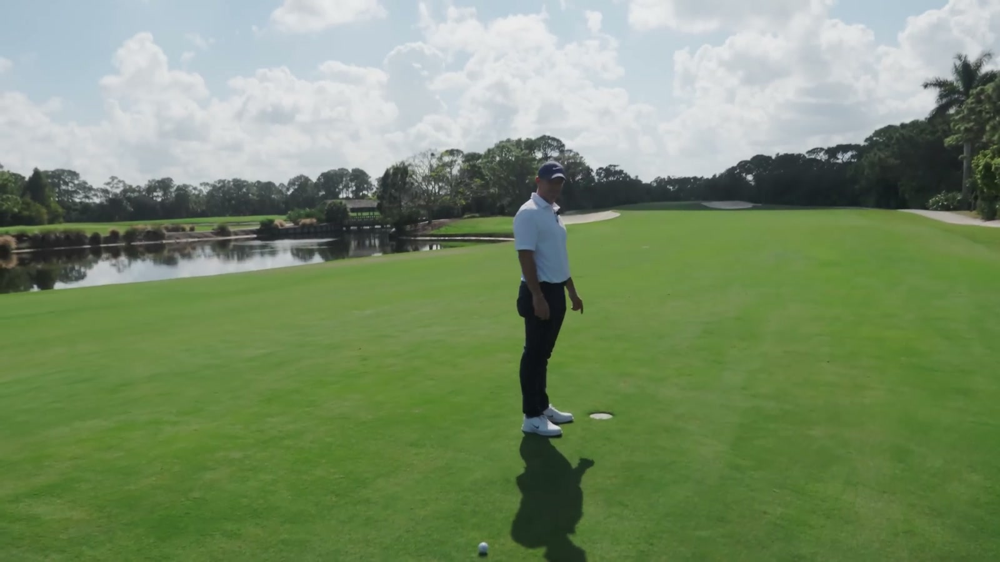
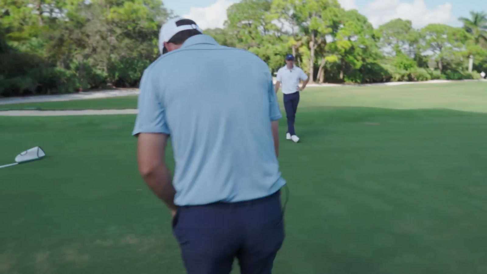
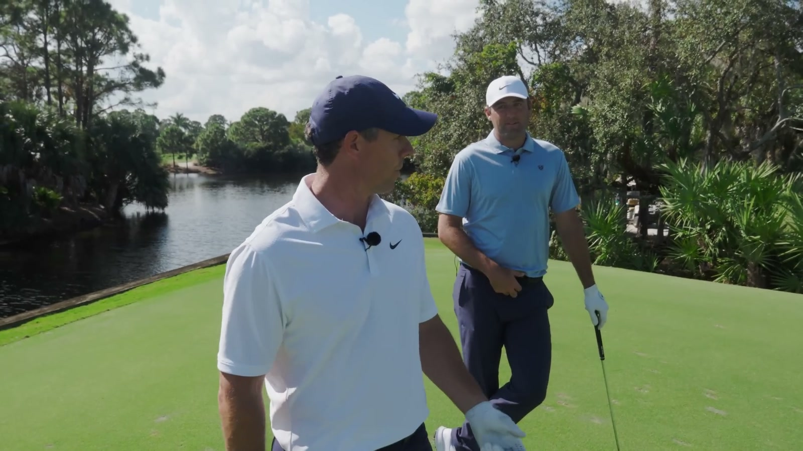
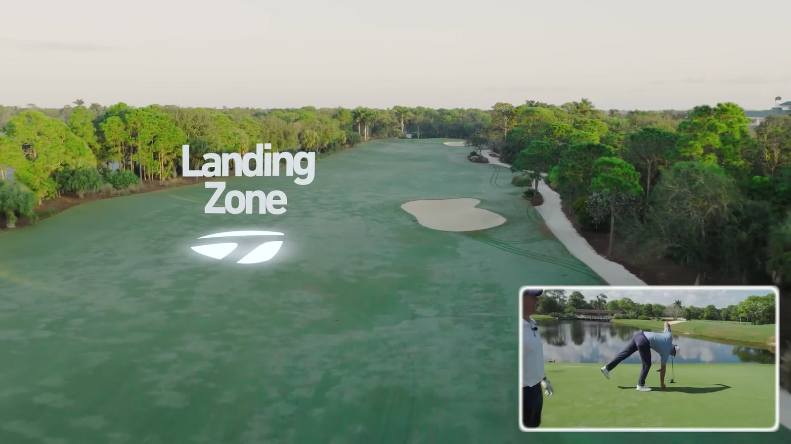

Executive summary
Scottie wins by simplifying the problem one decision at a time
Scottie Scheffler and Rory McIlroy play a three-hole stroke-play match: a 528-yard par five, a 150-yard par three, and a 445-yard par four. Both birdie the opening hole. On the par three, Scottie commits to a full-flight 9-iron, finishes pin high, and converts the birdie putt; Rory changes from wedge to a controlled 9-iron, leaves himself farther away, and misses. Scottie carries that one-shot advantage through the final hole and Rory confirms that Scottie has beaten him again.
The result is less interesting than how they get there. Scottie uses conservative target geometry when the hole is unfamiliar, combines eyesight with foot pressure to read greens, and tries to reduce execution to a picture plus one feel. Rory uses a repeatable matrix of three iron swings rather than improvising every partial distance. Both players separate information gathering from execution: once the picture is clear, extra thoughts become noise.
Score boundary. The video overlays and dialogue clearly show both players at one under after the first hole, Scottie making the separating putt on the second, and Rory naming Scottie the winner. The edit does not present a final written scorecard, so this article does not invent exact third-hole scores.
Shot-by-shot map
The match turns on target and speed control, not spectacular recovery
| Hole / player | Situation | Club or shot | Decision | Result or lesson | Time |
|---|---|---|---|---|---|
| 1 · Scottie tee | Unfamiliar 528-yard par five with water left. | Controlled tee ball toward the right edge of the bunker. | Start with a line that keeps the ball in play and removes the water. | The shot finds safety; the conversation frames it as a useful option when he does not fully know the hole. | 0:13 |
| 1 · Rory tee | Same visual and water threat. | A ball designed not to carry far and left. | Use a familiar hold-off shape rather than chase maximum distance. | He explicitly says the priority is simply to get it in play. | 0:51 |
| 1 · Scottie approach | Initial information suggests roughly mid-190s; the pin has actually moved farther back. | 6-iron, flighted lower. | Keep flight down and execute the number supplied. | The strike is excellent, but the target information is wrong. Execution cannot repair a bad input. | 2:02 |
| 1 · Rory approach | Same changed pin. | 7-iron. | Play his number after Scottie's shot reveals the location problem. | Both still make birdie, and the match remains level. | 3:01 |
| 2 · Scottie | 150 yards; wind from the right and possibly hurting. | Full-flight 9-iron. | Commit to the longer club only after deciding the wind is not enough to force another shape. | Pin high, then converts the birdie putt. | 5:35 |
| 2 · Rory | Initially holds wedge, then reacts to Scottie's pin-high result. | Three-quarter 9-iron at full speed, held against the wind. | Use a known 155-yard window rather than stretch the wedge. | The shot comes up shorter than intended, leaving the longer putt he misses. | 6:21 |
| 3 · Scottie tee | 445-yard par four; wind from the right; bunker judged carryable. | Driver, straight and held against the wind. | Cover the bunker while resisting the wind rather than turning the ball with it. | Fairway position and a wedge approach. | 10:15 |
| 3 · Rory tee | Same hole and wind. | Mid-height fairway ball, curving away from the left side. | Use the bunker carry as the minimum and curve into the wider landing area. | He finds room right and keeps a short approach. | 10:54 |
Hole one · Safe geometry
When the hole is unclear, choose the shot that removes one side
Scottie's first tee target is the right edge of a bunker. Rory's response is a controlled ball that avoids a long carry toward the water on the left. Neither player treats the par five as an invitation to swing as hard as possible. Their first job is to make the second shot ordinary.
Scottie later explains that he leaned on this kind of tee shot at Pinehurst and on holes where the visual never feels comfortable. The lesson is not a specific swing shape. It is to own a pattern whose miss stays inside the playable corridor when the architecture is unfamiliar.

Information is part of the shot. Scottie hits his intended low 6-iron beautifully, then discovers the pin has moved. His joke - all you can do is execute - exposes a serious rule: club selection is only as good as the distance and target data feeding it.
Green reading
Scottie uses eyes first, feet second; Rory mostly trusts his eyes
Scottie begins behind the ball and forms a broad visual prediction: right-to-left early, then straighter near the hole, perhaps moving slightly back to the right. He then walks the line and checks the slope with his feet. The second input does not replace the visual read; it verifies and refines it.
Rory says he reads almost entirely with his eyes. He sees a similar overall movement but expects slightly more break from his own line. The contrast matters because neither player copies the other's method. Each uses the smallest sensing system he trusts under competition.

Hole two · 150 yards
One committed stock window beats a late compromise
With wind from the right and uncertain help or hurt, Scottie considers whether 9-iron is enough. He chooses a full-flight 9-iron and finishes pin high. Rory begins with wedge, watches Scottie's result, then switches to 9-iron. His selected motion is three-quarter backswing at full speed, intended to fly about 155 yards while holding against the wind.
The distinction is subtle. Rory's shot is not invented on the spot; it belongs to a practiced distance matrix. But club switching plus wind uncertainty creates a narrower commitment window. The ball comes up short enough to leave a demanding putt. Scottie's simpler full-flight choice leaves the better birdie chance, which he converts.

Rory's iron matrix
Three swings turn one 9-iron into three predictable clubs
Rory gives unusually concrete numbers for his 9-iron. The labels sound similar, but the speed instruction changes the outcome. A three-quarter backswing at full speed is his normal controlled shot. A three-quarter backswing at three-quarter speed becomes a softer, chippier motion with less spin. His stock swing remains the top window.
This is better than thinking only in full and partial. The backswing length sets the size of the motion; the speed intention tunes energy and spin. Because each combination has a known number, Rory can choose a shot instead of hoping to manufacture the correct amount of "less."
He also says a lower-compression ball gives slightly more iron ball speed but adds enough spin to largely cancel the distance change. The practical gain is control, not a wholesale rewrite of his yardages.
Putting under pressure
Build the picture, keep one feel, forget the rest
After Scottie makes the separating putt, he estimates that he started it roughly six inches outside the hole. His process is to form a picture of what the ball should do, then remove the remaining analysis. Rory agrees with the principle: setup may have a few checkpoints, but execution needs only one stroke feel.
Scottie extends the same rule beyond putting. If he can translate a visualized shot shape from his brain into his hands, he is in a good place. The useful thought is not a technical paragraph; it is one physical cue that organizes the motion.
A practical sequence: collect information, create the ball-flight picture, check setup, choose one feel, then stop solving. More analysis after commitment does not add precision; it competes with the movement.
Hole three · Protecting the lead
The bunker is not a target; it is a carry checkpoint
On the final 445-yard par four, both players decide the fairway bunker can be covered. Scottie tries to hit a straight driver that holds against the right-to-left influence of the wind. Rory describes a mid-height fairway ball that starts from the left side and curves into the available room.
The key is how they use the bunker. It defines the minimum carry and starting geometry, not the final destination. Once the obstacle is removed from play, both can select a shape that expands the landing zone beyond it.

From the fairway, Scottie has roughly the low 130s and chooses wedge to avoid overreacting to wind he cannot feel clearly. Rory estimates 115 yards from semi-rough and plays just under a three-quarter sand wedge, expecting the soft green to stop it. Their distance estimates are short and conversational, but each converts uncertainty into a familiar shot rather than a complicated correction.
Amateur playbook
Seven ideas to carry onto the course
- On an unfamiliar tee, remove the worst side first. A repeatable safety shape is more valuable than ten extra yards.
- Use hazards as geometry. Decide whether a bunker is a carry requirement, a starting line, or the boundary of the landing zone.
- Separate target data from swing execution. Confirm the pin and front number before praising or blaming the strike.
- Build three distances with each scoring iron. Record stock, shorter-backswing/full-speed, and shorter-backswing/reduced-speed carry numbers.
- Read with the sensors you trust. Eyes can create the map; feet can verify slope. More inputs are useful only when they improve confidence.
- Commit to one feel. Keep technical checkpoints before the stroke, not inside it.
- Let another player's shot inform you without owning you. Rory learns from Scottie's flight, but still chooses a shot from his own matrix.
My take
The gap between elite players is often the cost of one extra uncertainty
Nothing in this match looks like a dramatic tactical mistake. Both players choose sensible shapes, control trajectory, and make birdies. The separation comes on the par three, where Scottie's full-flight decision is slightly cleaner and produces the better putting opportunity. Rory's club change and partial-shot calculation are sophisticated, but they also carry one more layer of uncertainty.
The broader lesson is not to avoid partial shots. Rory's three-window system is excellent. It is to notice when the simplest trusted window already solves the problem. Elite course management often means spending complexity only where it buys a real advantage.
For more long-game decision making, see Tiger, Scottie, and Fleetwood: Three Fairway-Wood Systems.
Sources and method
What this article is based on
- TaylorMade Golf Canada · World No. 1 vs World No. 2 (3-Hole Match). Primary source for the match, dialogue, yardages, club choices, and visible score overlays.
- The official video description and metadata. Used to confirm the players, publication date, running time, and match framing.
Method: 433 public English-caption rows were reviewed against the 1080p video and official metadata. Five frames were exported at 1600x900. Spoken yardages and player descriptions are preserved; exact final-hole scores and equipment details not clearly established by the edit are not inferred.